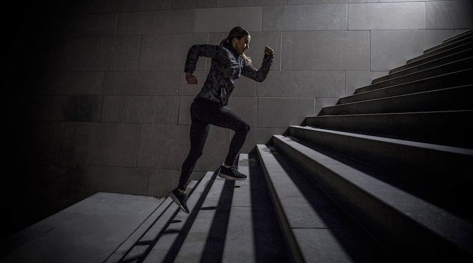

Motion activity detection with the Movesense Practical Work II
Axel Fahy
Andres Perez-Uribe
 In this laboratory you are going to detect motion activities such as walking, running, jumping, resting, etc. using the accelerometer of the Movesense.
Steps
We provide you with a notebook with an example code to load and visualize the data. virtualenv: Prepare a virtual environment with all the Python tools needed, and listed in the following file: requirements.txt
- Record all the activities you want to detect multiple times (for example 5 times), with the same duration, for example of 10 secondes.
- Put each activities in a different folder. For example a folder run containing all the records taken when running, and so on.
- Load the data by activity.
- Visualize the data.
- Find a way to detect the activities. That is, try to identify a feature that characterizes a given activity and allows you to differentiate it from the others. For example, you may compute the standard deviation of the data corresponding to the activities. Don't hesitate to try more complex features if needed.
$ python3 -m venv venv $ source venv/bin/activate $ pip install -r requirements.txtNotebook: The notebook from this folder contains an example to read the data and the beginning of the practical work, you can start it using:$ jupyter labAnalysis
- What characteristics of the MoseSense sensor are important to know when performing a recording ? What are the "by default" settings you are using right now ?
- How noisy is the data captured by the MoveSense sensor ?
- How variable are the recordings you made for a given activity ? How variable is the feature you computed to characterize a given activity ?
- Is it always possible to differentiate various activities by computing a feature of the corresponding data ? If not, why not combining multiple features (e.g., median, range, standard deviation) and defining a rule (or a set of rules) based on them ?
- What other features can be computed to characterize a set of measurements like the ones captured using the MoveSense during a particular activity ?
- For a cyclic activity like walking, can you identify a periodic pattern in the data ?
- Did you observe that the sensor has to be worn in the same way during an experiment ? (e.g., you cannot turn it upside down for instance ?) why ? by the way, did you notice the sensing of the acceleration caused by gravity and how it perturbs your data ?